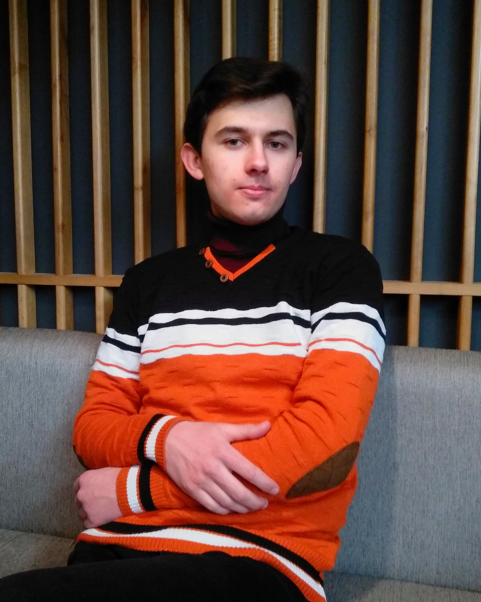

Олександр Луцик
Резюме
— Привіт! Я (Майже-)Junior .NET fullstack розробник. Я займаюсь самонавчанням & працюю над покращенням своїх знань та навичок, в області програмування.
Професійні навички📝
- Добре знання принципів ООП
- Добре знання Алгоритмів/Структур даних
- Добре знання "Регулярних виразів"
- Середні знання синтаксису C# та середовища .NET
- Середні знання T-SQL
- Середні знання синтаксису C++
- Базові знання HTML/CSS
- Базові знання ES6+
- Базові знання Патернів проектування
Про мене👦
- Я скурпульозно (інколи занадто) відношусь до поставлених завдань та деталей.
- Люблю живе спілкування та прогулянки на природі.
- Граю шахи та, за можливості, беру участь у змаганнях.
- В майбутньому планую вивчити французьку та навчитись грати на музичному інструменті.
Мови
Освіта📚
-
Травень 2021
-
1ше Вересня 2018 – Сьогодення
-
Червень 2018
-
- захистив три наукових роботи в Малій академії наук України — дві роботи на тему: "Екстремальні задачі планіметрії" та одна на тему: "Система тестування знань"
- завоював 3тє місце на олімпіаді Хмельницької області з програмування
-
-
2017
Досвід роботи💡
Моя історія роботи здебільшого про використання C# та JS у CRM Creatio під час мого стажування в True Item.
Також, мій досвід доповнився розробкою пет та університетських проектів.
- Наприклад, я створив систему перевірки знань студентів на основі WinForms.
- Реалізував патерн MVC в бекенді сайту.